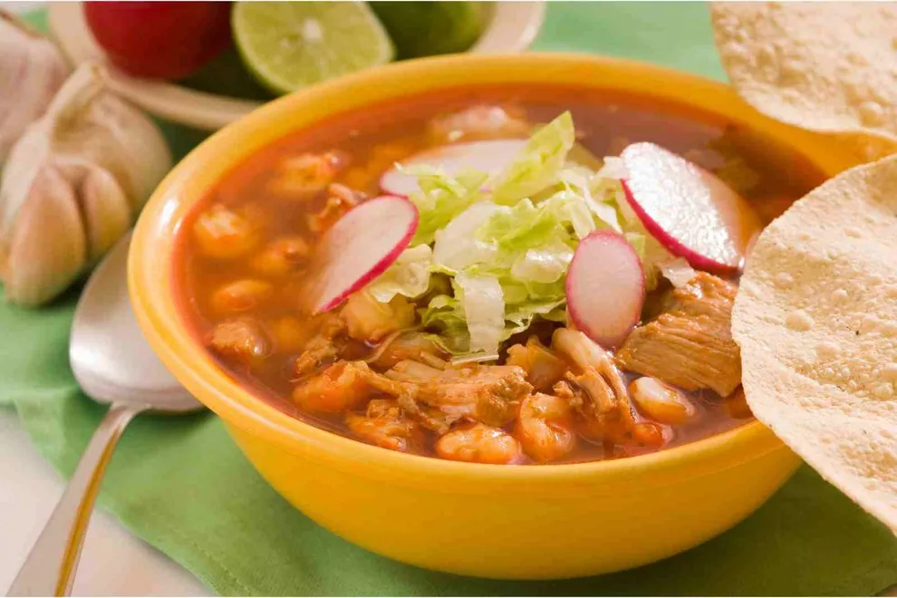

Sopas
Pozole tradicional
O pozole é uma tradicional e reconfortante sopa mexicana feita com grãos de milho descascados (hominy) e carne, geralmente de porco ou frango. Cozido lentamente com um caldo rico em ervas e especiarias, o prato se destaca por suas variações de cores: vermelho, verde ou branco.